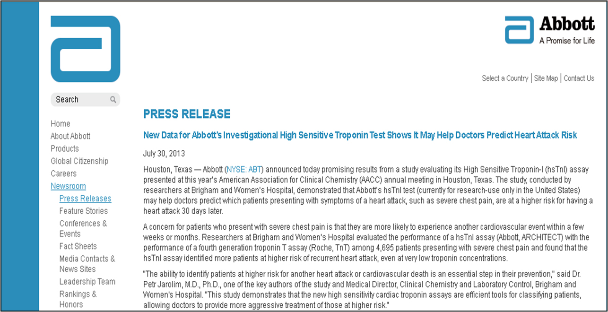

Roche Troponin T is the standard by which others compare themselves 12
Researchers at Brigham and Women's Hospital evaluated the performance of a hsTnI assay (Abbott, ARCHITECT) with the performance of a fourth generation troponin T assay (Roche, TnT) among 4,695 patients presenting with severe chest pain and found that the hsTnI assay identified more patients at higher risk of recurrent heart attack, even at very low troponin concentrations.
Since TnI assays became commercially available, they have been compared to the Roche Troponin T test.
Now, the new high sensitive Troponin I assays compare their results to Roche Troponin T.
What does this imply? Roche is the Standard?